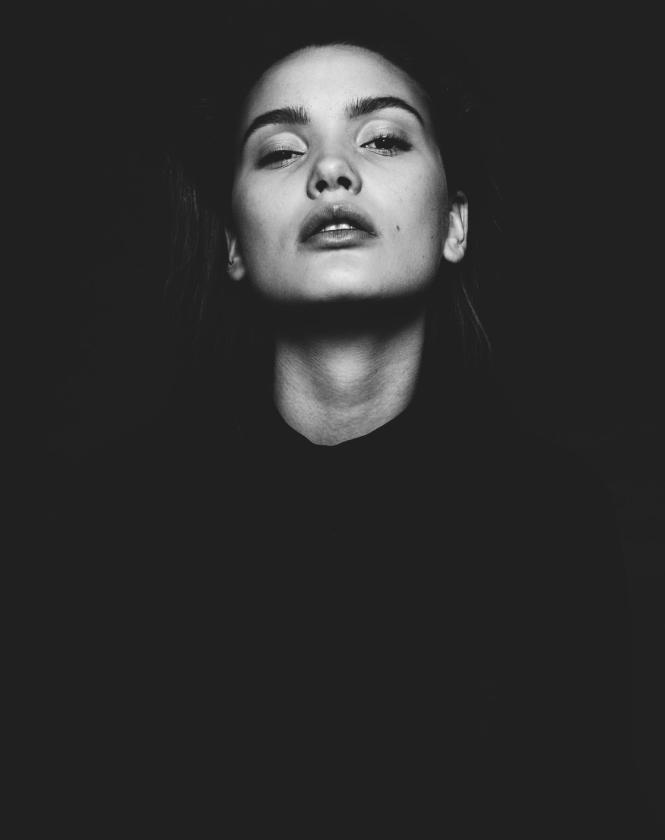

Фотография как отражение души
Меня зовут Галина Мэй и я люблю показывать людям насколько они красивы.
01
03

Меня зовут Галина Мэй и я люблю показывать людям насколько они красивы.
Я начала фотографировать, когда была подростком. Среди прочих увлечений, которые быстро забывались, фотография надолго вошла в мою жизнь и стала ее неотъемлимой частью.
— Видео с фотосессий


Мы заранее обсуждаем результат, которого вы хотите добиться, ищем локацию и продумываем ваш образ до мелочей.
В фотосессию включено время для расслабления и адаптации, ведь в конечном счете, фотография о том, кто вы есть. Это правда по отношению к себе и именно ее мы будем искать.
— Портфолио